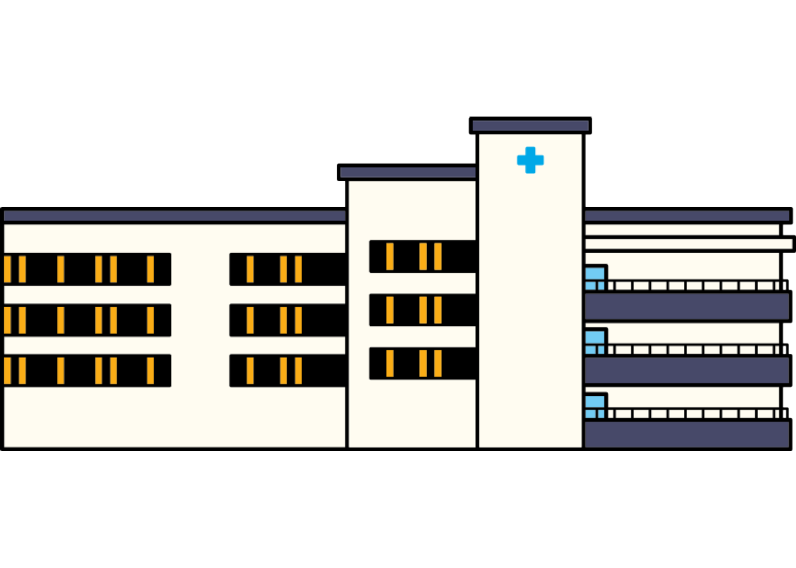
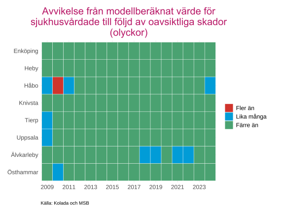
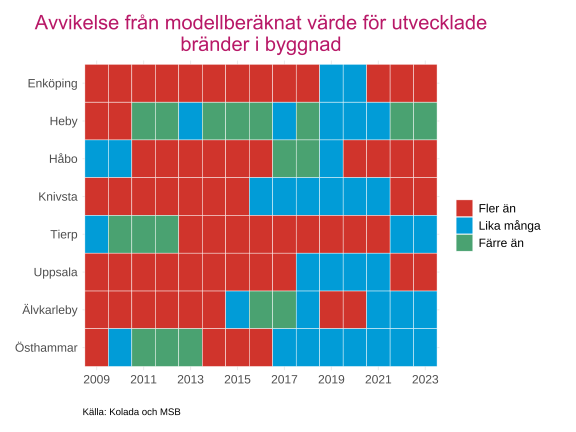
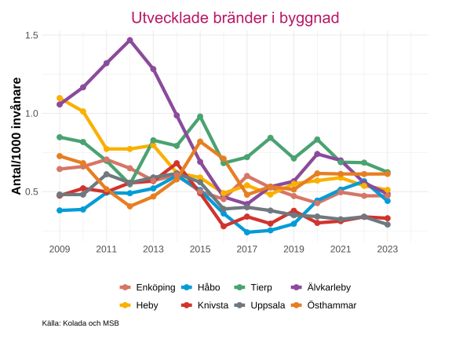
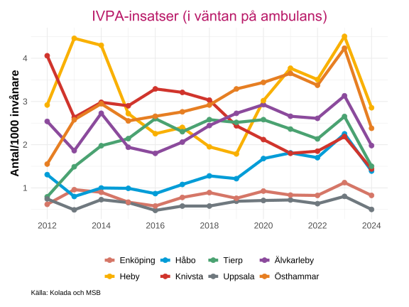
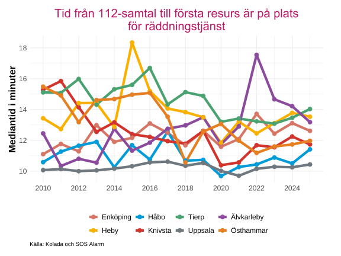
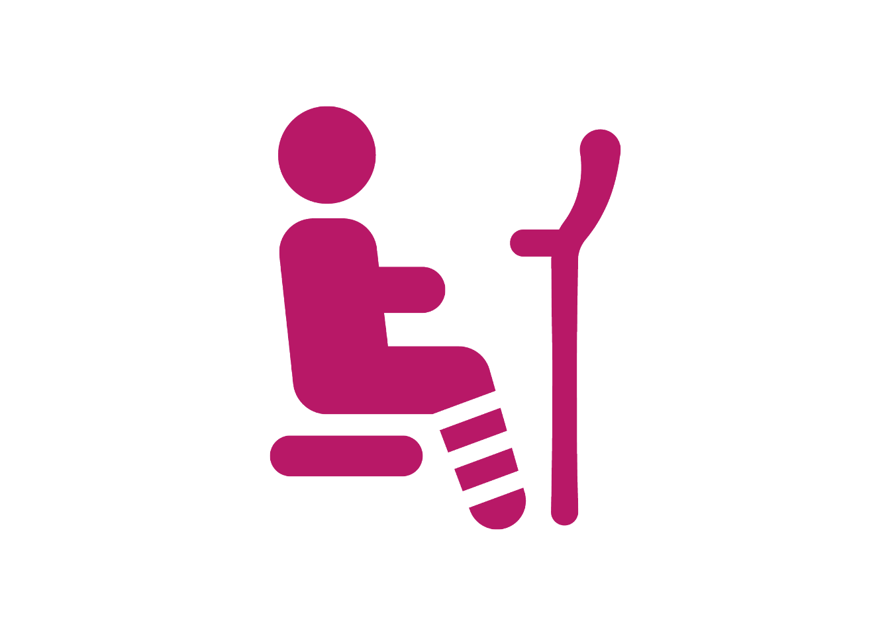
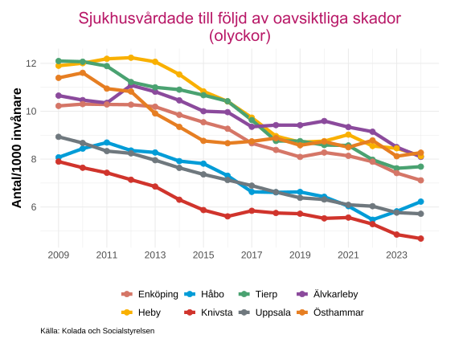
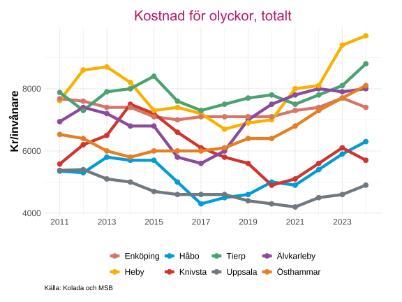

Räddningstjänst
Inledning
Denna rapport belyser olyckor och räddningstjänst i länets kommuner med fokus på utvecklingen över tid och skillnader mellan kommunerna. Analysen omfattar både modellberäknade avvikelser från Myndigheten för samhällsskydd och beredskap (MSB) (2025) samt faktisk statistik över olyckor, bränder, IVPA-uppdrag, responstider och kostnader till följd av olyckor.
Avvikelse från MSB-beräkningar
Data är hämtat från Rådet för främjande av kommunala analyser (2025) som i sin tur hänvisar till Myndigheten för samhällsskydd och beredskap (MSB) (2025).
MSB:s modellberäkningar baseras på olika strukturella faktorer på kommunnivå. Underlaget utgår från Brottsförebyggande rådets (Brå) officiella kriminalstatistik och beskriver brottsligheten utifrån de brott som anmälts till och handlagts av polis, tull, åklagare, domstol och kriminalvård. Brott som inte anmäls ingår således inte i statistiken. Däremot omfattas brott som begåtts tidigare men anmälts under redovisningsåret, liksom brott som anmälts i Sverige men begåtts utomlands. I viss utsträckning ingår även anmälningar som senare visat sig inte avse något brott.
Data från modellberäkningarna ska tolkas som att det förväntade antal för ett år och kommun har inträffat eller ej och om det då har inträffat fler eller färre gånger.
Avvikelse sjukhusvårdande
Denna indikator visar avvikelsen mellan det modellberäknade värdet och det faktiska antalet personer som sjukhusvårdats till följd av oavsiktliga skador (olyckor). Modellberäkningen baseras på olika strukturella faktorer i kommunen och jämförs med indikatorn som anger antalet personer som vårdats minst 24 timmar i slutenvård.
Uppgifterna kommer från Socialstyrelsens patientregister, som omfattar alla vårdtillfällen där patienten skrivits ut från ett svenskt sjukhus under aktuellt år till följd av yttre orsak (olycksfall). En person kan endast registreras en gång per år. Antalet vårdade har justerats med befolkningsdata från SCB på kommunnivå. För att reducera slumpmässiga variationer används ett treårsmedelvärde (år \(T-2\) till \(T\)).

Ladda ner
{kind=link}
{kind=link}
Endast en cell i grafen påvisar ett värde som är fler antal olyckor som renderat i att en person vårdats i minst 24 timmar i slutenvård än förväntat. Nästan alla celler är gröna och påvisar därav att antalet är mycket lägre än förväntat i samtliga kommuner för en stor del av åren.
Avvikelse utvecklade bränder i byggnad
Denna indikator visar avvikelsen mellan modellberäknat värde och faktiskt antal utvecklade bränder i byggnader. Modellberäkningen baseras på bebyggelsestruktur och demografiska faktorer, och jämförs med indikatorn som anger antalet utvecklade bränder i byggnad.
Uppgifterna hämtas från Räddningsverkets insatsregister, som bygger på de insatsrapporter räddningstjänsterna upprättar efter genomförda insatser. Registret omfattar samtliga räddningsinsatser vid bränder i byggnader, såväl bostäder som allmänna byggnader och industribyggnader.
Med utvecklad brand avses fall där det fortfarande brinner vid räddningstjänstens ankomst. Registret inkluderar endast bränder som lett till en faktisk räddningsinsats. Antalet insatser har justerats med SCB:s befolkningsuppgifter för respektive kommun. För denna indikator används ett femårsmedelvärde (år \(T-4\) till \(T\)).

Ladda ner
{kind=link}
{kind=link}
Heby och Östhammar är de två kommunerna som inte har en majoritet av år där ett högre antal utvecklade bränder i byggnader än förväntat inträffat under perioden. Från 2015 och framåt så har det varit färre år som avviker ifrån MSBs modellberäknade värde.
Räddningstjänst
Brandförsvar och samverkan i räddningstjänst
Detta avsnitt belyser kommunernas insatser inom brandförsvar och räddningstjänst, baserat på data från Rådet för främjande av kommunala analyser (2025) som i sin tur hänvisar till Myndigheten för samhällsskydd och beredskap (MSB) (2025). Uppgifterna kommer från Räddningsverkets insatsregister, som bygger på räddningstjänsternas insatsrapporter efter utryckningar. För att möjliggöra jämförelser mellan kommuner har resultaten justerats utifrån befolkningsuppgifter från SCB.
Utvecklade bränder i byggnad
Statistiken avser räddningstjänstens insatser vid utvecklade bränder i byggnader, det vill säga tillfällen där det fortfarande brann när räddningstjänsten anlände. Begreppet byggnad omfattar såväl bostäder som offentliga lokaler och industribyggnader. Endast bränder som lett till en faktisk räddningsinsats ingår i registret.
Uppgifterna redovisas som ett femårsmedelvärde (år \(T-4\) till \(T\)).

Ladda ner
{kind=link}
{kind=link}
Uppsala och Knivsta är de två kommunerna som har det lägsta antalet utvecklade bränder i byggnader per 1000 invånare de senaste åren, högst värden hittas i Tierp och Östhammar för samma år. De högsta värden hittas i Heby och Älvkarleby i början av perioden, där det skedde över 1 utvecklad brand per 1000 invånare i Heby, och som högst nästan 1.5 bränder per 1000 invånare år 2012 i Älvkarleby. De lägsta värdena är i Håbo för 2017 och 2018 på runt 0.25 utvecklade bränder per 1000 invånare.
IVPA
Indikatorn visar antalet insatser där räddningstjänsten larmats till så kallade IVPA-uppdrag (I väntan på ambulans). Dessa uppdrag registreras som ”annat uppdrag” i insatsrapporterna, och omfattningen kan variera mellan kommuner eftersom dokumentationskravet enligt LSO inte är enhetligt.
Endast de IVPA-insatser som redovisats i insatsrapporten ingår i statistiken.

Ladda ner
{kind=link}
{kind=link}
Antalet IVPA-insatser per 1000 invånare är som lägst i Uppsala och Enköping, vilket är kommunerna i länet med sjukhus och lasarettet och att ta sig dit själv är då lättare. Flest IVPA-insatser har de senaste åren skett i Heby och Östhammar, men mellan 2015 och 2018 så var Knivsta den kommunen med det hösta antalet. Det ser nästan ut att vara 3 kluster i slutet av perioden, de 2 kommunerna med minsta antalet, 4 kommuner i mitten och de två kommunerna med det högsta antalet.
Samtliga kommuner har lägre värden för 2024 än 2023.
Responstider för räddningstjänst
Uppgifterna är hämtade från Rådet för främjande av kommunala analyser (2025), som hänvisar till SOS Alarm (2025). Responstiden mäter tiden från det att larmcentralen tar emot ett larm tills räddningstjänsten anländer till skadeplatsen. Endast de insatserna med syfte att rädda liv, egendom eller miljö ingår i data.
Mätperioden omfattar juni \(T-1\) till juni \(T\), och indikatorn redovisas som medianvärde i minuter för år \(T\).

Ladda ner
{kind=link}
{kind=link}
Under perioden så har kommunen med den högsta mediantiden varierat mellan åren. För det senaste året är det Tierp, men för de 3 föregående åren så har det varit Älvkarleby, som framför allt 2022 stack ut med en mediantid på över 17 minuter. Uppsala har den kortaste mediantiden på runt 10 minuter för alla år förutom 2020 där Håbo hade lägst. Östhammar hade den högsta responstiden 2010 på över 15 minuter och efter 2016 så har mediantiden sjunkit för att nu vara den fjärde lägsta i länet på runt 12 minuter.
Olyckor

Data är hämtat från Rådet för främjande av kommunala analyser (2025) som i sin tur hänvisar till Socialstyrelsen (2025).
Indikatorn visar treårsmedelvärde (år \(T-2\) till \(T\)) för antal personer som slutenvårdats minst 24 timmar på grund av oavsiktliga skador (olyckor) per 1000 invånare. Uppgifterna kommer från Socialstyrelsens patientregister, som omfattar alla vårdtillfällen där patienten skrivits ut från ett svenskt sjukhus till följd av yttre orsaker (olycksfall). En och samma person räknas endast en gång per år. Antalet vårdtillfällen har justerats med befolkningsdata från SCB på kommunnivå.

Ladda ner
{kind=link}
{kind=link}
Samtliga kommuner visar en tydlig nedåtgående trend för antalet personer som slutenvårdats i minst 24 timmar på grund av olyckor under perioden. Det ser ut att vara 2 kluster, där Håbo, Knivsta och Uppsala har närliggande låga antal olyckor per 1000 invånare, medan Enköping, Heby, Tierp, Älvkarleby och Östhammar har liknande värden.
Den största förändringen har skett i Tierp som gått från att ha över 12 personer som slutenvårdats pga olycka till under 8, Knivsta har det lägsta antalet av alla kommuner under samtliga år i perioden.
Kostnader
Uppgifterna är hämtade från Rådet för främjande av kommunala analyser (2025), som hänvisar till Myndigheten för samhällsskydd och beredskap (MSB) (2025) och Sveriges Kommuner och Regioner (SKR) (2025).
Kostnaderna per olyckstyp har räknats upp till prisnivån för år \(T\) med hänsyn till inflationen enligt konsumentprisindex. Endast kostnader som uppstår efter att olyckan inträffat ingår, medan kostnader för beredskap och förebyggande åtgärder exkluderas. Kostnaderna omfattar alla delar av samhället: staten, kommuner, regioner, näringsliv samt drabbade individer och deras anhöriga. Kostnader för beredskap och förebyggande åtgärder ingår således inte i data.

Ladda ner
{kind=link}
{kind=link}
Kostnaden per invånare för olyckor har varierat under perioden, Knivsta hade 2014 det tredje högsta kostnaden i länet på runt 7500 kr/invånare till att 2020 ha det näst lägsta kostnaden på under 5000 kr/invånare. Heby har det högsta kostnaden under hela perioden, vilket är för 2023 och landade på över 9000 kronor per invånare, det näst högsta värdet för samma år var i Tierp på precis över 8000 kr/invånare.
Det går att dela upp kommunerna i tre tydliga kluster för de senaste åren, där Uppsala är ensamt i ett kluster som kommunen med lägst kostnad, Håbo och Knivsta med kostnader på runt 6000 kronor per invånare. Det tredje klustret innehåller Östhammar, Enköping, Älvkarleby, Tierp och Heby (sticker ut ett av åren), som klustret med högst kostnader för olyckor.
Källor
Myndigheten för samhällsskydd och beredskap (MSB). 2025. ”Verktyg och tjänster”. https://www.msb.se/sv/.
Rådet för främjande av kommunala analyser. 2025. ”Kolada – Jämför och analysera nyckeltal i kommuner och regioner”. https://www.kolada.se/.
SOS Alarm. 2025. ”SOS Inblick – 112-statistik per kommun”. https://www.sosalarm.se/inblick/kommuner/.
Sveriges Kommuner och Regioner (SKR). 2025. ”Sveriges Kommuner och Regioner”. https://skr.se.